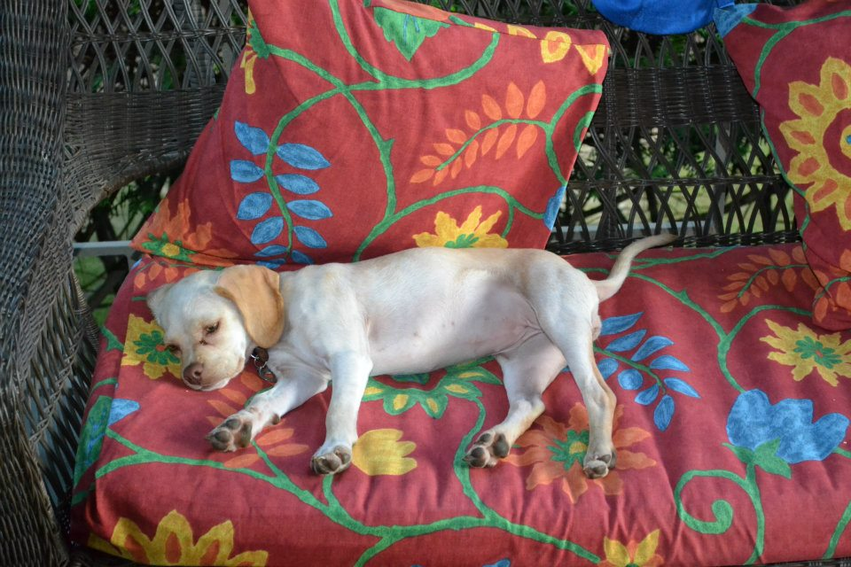

Hello world!
Let's talk about my dog, Sailor. (Please enjoy adorableness below.)

Here are three facts about my cute little stinker:
- She is 8 lbs
- She has blonde fur.
- She is half Chihuahua and half Cocker Spaniel.
That's not all! Here are three more things I know you are dying to know about this sweet little fluffer:
- She is very lazy and loves to cuddle.
- Unlike most other dogs, she is NOT motivated by food whatsoever.
- Her best friend is my roommate's cat, Flamingo Styles.
For pictures of other cute Chi-spaniel puppies (aka. pups, pooches, stinkers, fluffers, good boys, doggos, etc...) check out this image search!